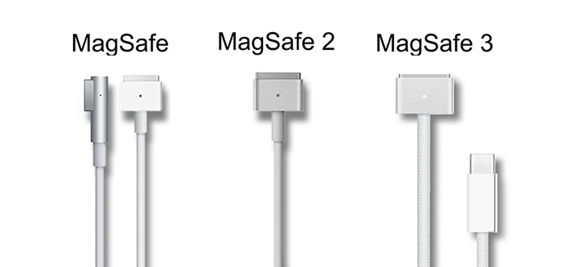

O que é MagSafe? Veja como funciona a conexão magnética nos Macs e iPhones

MagSafe é uma tecnologia criada pela Apple para que carregadores sejam conectados a um iPhone, Mac ou estojo de AirPods via imãs. O Magsafe também pode fixar acessórios como capas, carteiras e baterias externas ao iPhone.
O Tecnoblog mostra, a seguir, como o MagSafe funciona, as suas diferentes versões, quais dispositivos suportam a tecnologia, e como ela pode substituir até os conectores proprietários da Apple.
O que é a tecnologia MagSafe?
O MagSafe é uma tecnologia da Apple que utiliza propriedades magnéticas para conectar cabos e carregadores a seus dispositivos. A companhia registrou o nome MagSafe como uma marca para destacar a tecnologia em seus produtos.
A primeira versão do MagSafe surgiu em 2006 para conectar cabos de alimentação ao então novo MacBook Pro. Versões mais finas do conector foram apresentadas em 2012 e 2021. Em 2020, a tecnologia chegou ao iPhone para permitir fixação de acessórios ao aparelho.
Como funciona o cabo MagSafe nos Macs?
A Apple introduziu o MagSafe em 2006 como um conector da fonte de alimentação que se encaixa magneticamente ao Macbook Pro lançado no mesmo ano. O conector é composto por cinco pinos para fornecimento de energia, cujas tensões variam de 14,5 V a 20 V, de acordo com a potência fornecida pela fonte.
O principal benefício da conexão com imãs em relação a padrões como o conector USB-C é que o MagSafe se desprende quando puxado com um pouco de força, o que previne a queda do equipamento caso alguém tropece no cabo ou o puxe acidentalmente. O conector MagSafe possibilita ainda encaixe de qualquer lado.
Os conectores MagSafe 2 (2012) e MagSafe 3 (2021) são menores em relação à primeira versão, mas mantêm o formato achatado, a configuração de cinco pinos e a conexão magnética que permite encaixe em qualquer orientação.
Quais são as versões de conectores MagSafe para Macs?
A Apple desenvolveu três versões do MagSafe para a linha MacBook. Todas consistem em um conector magnético para alimentação elétrica, mas há diferenças nas dimensões físicas e no formato do componente

Como funciona a recarga MagSafe nos iPhones e AirPods?
A Apple introduziu o MagSafe na linha iPhone 12, em 2020. A tecnologia é implementada por meio de componentes sobrepostos e com formato de anel posicionados internamente na traseira do aparelho. Esses componentes incluem imãs que permitem a fixação de acessórios como carteiras e capinhas ao iPhone.
Pode-se ainda usar o MagSafe para recarregar o iPhone via indução magnética, inclusive via padrão Qi em taxas de até 15 W. Neste caso, a base de recarga fica posicionada com precisão ao celular devido ao alinhamento magnético. Por causa disso, o MagSafe fará parte da tecnologia Qi2, versão com mais desempenho.
Em 2021, a Apple introduziu a tecnologia MagSafe nos estojos (cases) dos AirPods de terceira geração e AirPods Pro para permitir recarga sem fio. Com isso, basta encaixar o estojo sobre a base para o procedimento começar. Os imãs no interior do estojo fazem a posição de fixação ser precisa.
Quais iPhones são compatíveis com MagSafe?
Todos os iPhones a partir da série 12 são compatíveis com o MagSafe. A lista de modelos com suporte à tecnologia magnética da Apple inclui:
- iPhone 12
- iPhone 12 Mini
- iPhone 12 Pro
- iPhone 12 Pro Max
- iPhone 13
- iPhone 13 Mini
- iPhone 13 Pro
- iPhone 13 Pro Max
- iPhone 14
- iPhone 14 Plus
- iPhone 14 Pro
- iPhone 14 Pro Max
- iPhone 15
- iPhone 15 Plus
- iPhone 15 Pro
- iPhone 15 Pro Max
Posso usar carregador por indução sem MagSafe no iPhone?
Os iPhones com MagSafe podem ser alimentados com carregadores por indução que não suportam a tecnologia, mas esses modelos tendem a funcionar com potência e corrente inferiores. Se o acessório não tiver certificação MFi, ele não poderá oferecer mais do que 7,5 W, enquanto carregadores com MagSafe chegam a 15 W.
Posso carregar Apple Watch com MagSafe?
Não. O Apple Watch não suporta o padrão MagSafe. Pode-se carregar o relógio com o MagSafe Duo Charger, acessório que tem uma base de recarga MagSafe para iPhone e uma base para o Apple Watch que funciona via indução, mas com uma tecnologia específica para a linha.
Os modelos Apple Watch não funcionam sequer com carregadores baseados no padrão Qi, o que obriga os usuários a buscarem acessórios exclusivos para o relógio.
Qual é a diferença entre MagSafe e carregador wireless?
O MagSafe é um padrão que usa propriedades magnéticas para permitir que conectores de alimentação elétrica sejam conectados a MacBooks, e que acessórios seja fixados ao iPhone 12 ou superior. Já um carregador wireless transmite energia a dispositivos como celulares com carregamento sem fio.
Qual é a diferença entre MagSafe e padrão Qi?
O MagSafe é uma tecnologia que usa imãs para alimentação elétrica em MacBooks e conexão de acessórios a iPhones. Já o padrão Qi é uma especificação aberta que permite que carregadores sem fio transmitam energia a dispositivos compatíveis, como o próprio iPhone.
Qual é a diferença entre carregador MagSafe e Lightning?
Um carregador MagSafe tem uma base que se fixa à traseira do iPhone 12 ou superior para fazer carregamento por indução magnética. Um carregador Lightning faz a recarga do iPhone por meio de um cabo com conector Lightning em uma ponta e USB na outra.
O carregador MagSafe tem a vantagem de ser mais prático, pois requer apenas que o iPhone seja posicionado sobre ele para a recarga começar. Já o cabo Lightning é capaz de conectar o iPhone a carregadores rápidos, o que permite que a bateria fique totalmente recarregada em menor tempo em relação ao MagSafe.